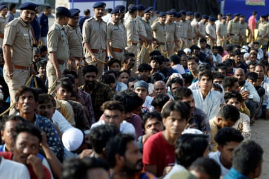
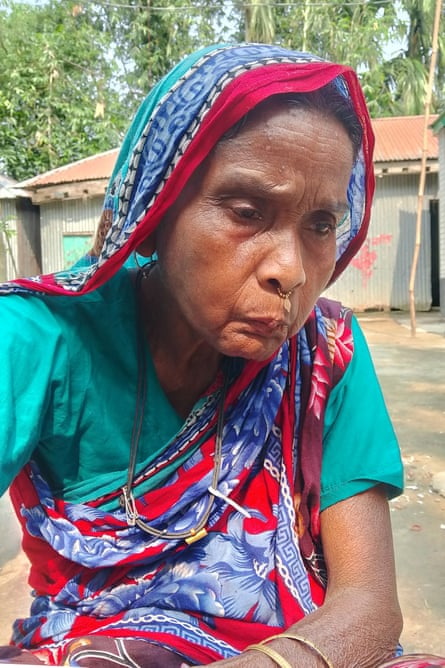

The Indian government has been accused of illegally deporting Indian Muslims to Bangladesh , prompting fears of an escalating campaign of persecution.
Thousands of people, largely Muslims suspected of being illegal immigrants from Bangladesh, have been rounded up by police across India in recent weeks, according to human rights groups, with many of them deprived of due legal process and sent over the border to neighbouring Muslim-majority Bangladesh.
Indian citizens are among those alleged to have been deported illegally, according to lawyers and accounts by deportees. Those who tried to resist being “pushed back” were threatened at gunpoint by India’s border security force, according to several accounts.
About 200 people have since been returned to India by Bangladeshi border guards after being found to be Indian citizens, with some forced to walk miles across treacherous terrain to get home.
“Instead of following due legal procedure, India is pushing mainly Muslims and low-income communities from their own country to Bangladesh without any consent,” said Taskin Fahmina, senior researcher at Bangladesh human rights organisation Odhikar. “This push by India is against national and international law.”
Bangladesh’s foreign ministry said it had written letters to the Indian authorities urging them to stop sending people over the border without consultation and vetting, as was previous official procedure, but they said those letters had gone unanswered.
Among those deported and returned was Hazera Khatun, 62, a physically disabled grandmother. Khatun’s daughter Jorina Begum said they had documents to prove two generations of her mother’s family had been born in India. “How can she be a Bangladeshi?” said Begum.
Khatun was picked up by police on 25 May and the next day was pushed into a van with 14 other Muslims who were then driven to the border with Bangladesh in the middle of the night. There, Khatun said officers from India’s Border Security Force (BSF) forced them to cross the border.

Hazera Khatun, 62, had to walk home through rivers and forests after being ‘pushed back’ from India to Bangladesh on 25 May.Photograph: Kazi Sharowar Hussain/Supplied
“They treated us like animals,” said Khatun. “We protested that we are Indians, why should we enter Bangladesh? But they threatened us with guns and said, ‘We will shoot you if you don’t go to the other side.’ After we heard four gunshots from the Indian side, we got very scared and quickly walked across the border.”
The group were taken into custody by Bangladesh’s border guards, and held in a makeshift camp in a field. However, Khatun said the authorities in Bangladesh would not allow the group to stay as their documents showed they were Indian citizens. They were driven a truck to the border and told to walk to India.
“When we returned, it was terrible,” said Khatun. “We had to walk through forests and rivers … We were so scared, we thought if the BSF officers found us coming back, they would kill us. I was sure we were going to die.” Eventually she made it back to her village on 31 May. According to her family, she was covered in bruises and deeply traumatised.
The escalating crackdown against so-called “illegal Bangladeshis” by the ruling Hindu nationalist Bharatiya Janata party (BJP) government comes in the wake of an attack by Islamist militants in the Indian-administered region of Kashmir in April which killed 25 Hindu tourists and a guide , after which the BJP government vowed to expel “outsiders”.
The mass detentions increased with the launch of Operation Sindhoor in May, when India launched strikes at neighbouring Muslim-majority Pakistan, which it blamed for the Kashmir militant attack and vowed to wipe out terror groups targeting India.
Over its 11 years in power, the BJP government has been accused by rights groups and citizens of persecuting, harassing and disenfranchising the country’s 200 million Muslims as part of its Hindu nationalist agenda, charges the government denies.
Police officers with men they believe to be undocumented Bangladeshi nationals after they were detained during raids in Ahmedabad, India, on 26 April.Photograph: Amit Dave/Reuters
The most widespread targeting and deporting of Muslims in recent weeks has been in the north-eastern state of Assam, as the BJP-run state government has escalated its long-running campaign against those it calls “infiltrators”. About 100 people who have been recently detained in the state are missing, according to activists.
The expulsions were described by activists as a worrying escalation of a long-running exercise in Assam to expel “illegal infiltrators”, in which Muslims are routinely called before “foreigners tribunals”, quasi-judicial courts, to prove they were born in India, or arrived before 1971. A controversial citizenship survey also took place in the state in 2019, resulting in thousands being put into detention centres.

Only Muslims have to prove their citizenship after Hindus, Sikhs and other religions were made exempt from the exercise by the state government.
This week, the hardline BJP chief minister of Assam, Himanta Sarma said it was now a policy of the state to automatically expel “illegal foreigners”. “This process will be intensified and expedited,” he said.
Not all those deported who claim to be Indian citizens have been able to return. Among those still stuck in Bangladesh is 67-year-old Maleka Begam , 67, from Assam, who was detained by police on 25 May.
Maleka Begum, 67, at the home of a family in Bangladesh who gave her shelter after she was deported by the Indian police on 25 May.Photograph: Jakir Hosen/Supplied
Speaking over the phone from a Bangladeshi border village in a state of distress, Begam – who is physically infirm and cannot walk unassisted – said she had been the only woman in a group of about 20 Muslims sent over to Bangladesh in the middle of the night on 27 May. She said they were ordered at gunpoint by the BSF to cross the border.
Begam’s son Imran Ali said his mother had documentation to prove she was born in India, and that all seven of her siblings also had proof. “Her deportation to Bangladesh is completely illegal. However, I cannot understand now how we can bring her back from Bangladesh. She is old and sick. We are very anxious about her,” said Ali.
Assam police and the BSF did not respond to repeated requests for comment.
Hundreds of people, mostly Muslims, have also been deported from the capital, Delhi, as well as the states of Gujarat, Rajasthan and Maharashtra. In Gujarat, the police claimed to have detained more than 6,500 suspected “Bangladeshi citizens”, and thousands were paraded through the streets, but it was later declared that only 450 of them were found to be illegal. Last week, Bangladesh’s border guards turned back four Muslim men picked up by police in Mumbai and deported, after it was found they were Indian migrant workers from the state of West Bengal.
Maj Gen Mohammad Ashrafuzzaman Siddiqui, director general of Border Guard Bangladesh, condemned India’s pushback policy as “a deviation from humane governance”.
“It contradicts international law and the dignity of the affected individuals,” said Siddiqui. “Acts such as abandoning people in forests, forcing women and children into rivers, or dumping stateless refugees at sea are not consistent with human rights principles.”